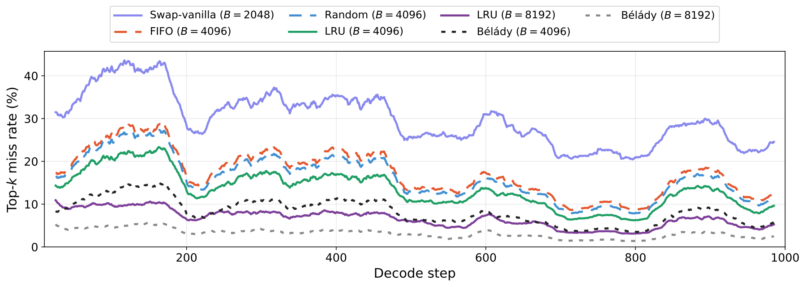
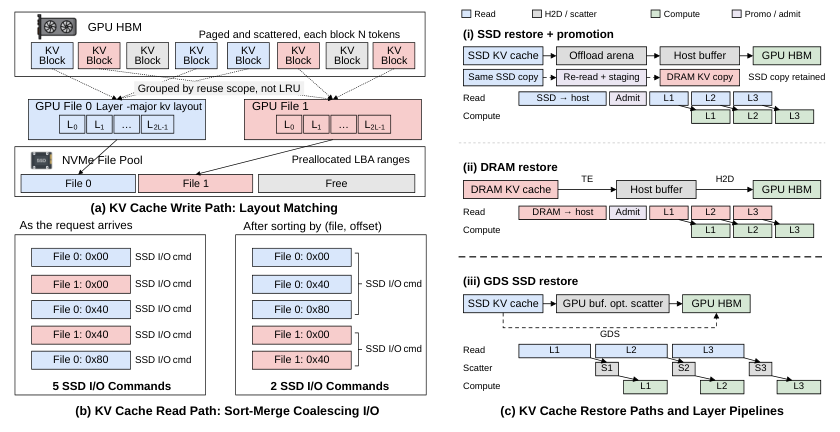
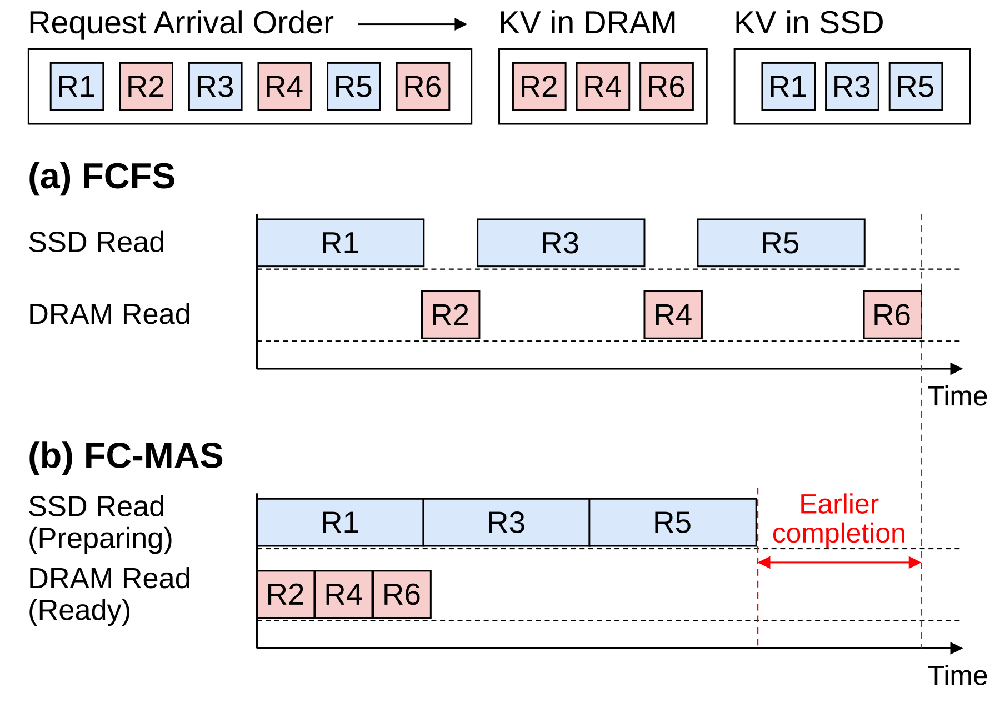

HiSparse 与 FlatCake 的机制和引用结果来自会议材料；三个研究方向为待验证设想。
01 / HiSparse
完整历史与 GPU 热工作集分离
原生稀疏模型每步只使用少量 KV，但完整历史仍需保留。保留热 KV 并按需补齐当前所选记录，可以减少 HBM 常驻量。


核心观察 PPT 所引轨迹中，仅暂存当前 top-k 时 miss 约 30%；容量为 2k 并使用 LRU 后，hit 约 87%。这些数字对应特定模型与选择轨迹。

核心设计 DRAM 保存完整历史，GPU 按请求、按层缓存热 KV；依据 Indexer 结果完成命中检查、替换与 miss 拉取，再执行 attention。
尚未解决 当 DRAM 容量也受限时，需要继续向 SSD 扩展；但逐层稀疏 miss 会产生小随机读。精确预取依赖模型明确共享的选择索引，不能只凭层间相似性保证。
研究启发：原生稀疏解码的 SSD 卸载，需要同时减少 miss 数量与每次 miss 的读取成本。
02 / FlatCake
把连续恢复与就绪请求调度结合起来
按会话连续组织 KV，并让就绪请求绕过仍在恢复的请求，减少碎片读取与队首阻塞。
核心观察 低复用负载存在大量一次性块；高复用的 Coding Agent 负载中，多会话长前缀仍可能超出 DRAM。两类负载都需要有效利用 SSD。


连续读取 会话数据集中存放、层内连续，减少零碎 I/O；GDS 减少主存中转。大块是否更快，仍取决于有效读取比例及 SSD、PCIe 等实际瓶颈。


就绪调度 分离 SSD-preparing 与 DRAM-ready 请求，并考虑等待时间。迁移到活跃解码后，还需检查当前层 KV 是否已进入 HBM、计算依赖是否满足。
研究启发：完整前缀的连续恢复不能直接套用到逐层稀疏访问。未来要重新匹配读取粒度与计算就绪条件。
03 / RESEARCH IDEAS
三个值得探索的切入点
以下为会上提出的研究设想，收益与参数仍需实验验证。
在保持原生稀疏选择与注意力语义的前提下，验证布局、缓存和调度的收益。
A 用局部热点缓存减少 SSD 读取量
核心思想 让 DRAM 保留各请求经常被重新选中的 KV，用更少的缓存支撑更多活跃请求；未缓存的历史仍可从 SSD 获取。
| HBM当前热工作集 | DRAM跨步复用的热点 | SSD历史 KV 后备存储 |
关键验证：10%–20% 是会上提出的起始缓存预算，尚非已证实的热点比例。测量热点是否稳定，以及每 token 的 SSD 读取字节数和可接纳并发是否改善。
B 用连续块降低剩余 miss 的读取成本
核心思想 按选中 KV 的物理页合并 I/O，并探索稳定共访问数据的连续布局，权衡少发读取请求与多读额外数据。
| 逐点读取 | 读取选中的离散 KV | 小 I/O 较多 |
| 合并读取 | 读取覆盖这些 KV 的连续块 | I/O 减少 可能多读 |
关键验证：改变块大小与队列深度，测有效带宽、读放大和重组成本。“64 token × 32 层”只是候选传输单元，是否饱和带宽、是否值得跨层读取均需实测。
C 用已就绪计算覆盖 SSD 拉取等待
核心思想 请求 A 读取 SSD 时执行依赖已满足的请求 B；按当前层的数据准备状态推进任务，同时限制长请求等待。
| 请求 A | SSD 读取与必要搬运 | KV 就绪后继续 A |
| GPU | 执行 HBM 已就绪请求 B | 执行 A 的 attention |
关键验证：DRAM 中有 KV 仍需 H2D，后续层仍受前层依赖约束。比较可重叠计算与实际 I/O 时长，并检查带宽争用、TPOT 尾延迟和吞吐；投机解码的覆盖能力另行测量。
验证顺序：先回放原生选择轨迹，确认热点与物理页分布；再测缓存和读取；最后加入调度，验证端到端吞吐与 TPOT。
《系统组小组会会议总结：原生稀疏注意力的 SSD 卸载》（2026-11-05，DOCX）。正文保留原记录论点与数字，引用图版权归原作者；概念示意均为待验证研究方向。
查看来源与使用说明 →